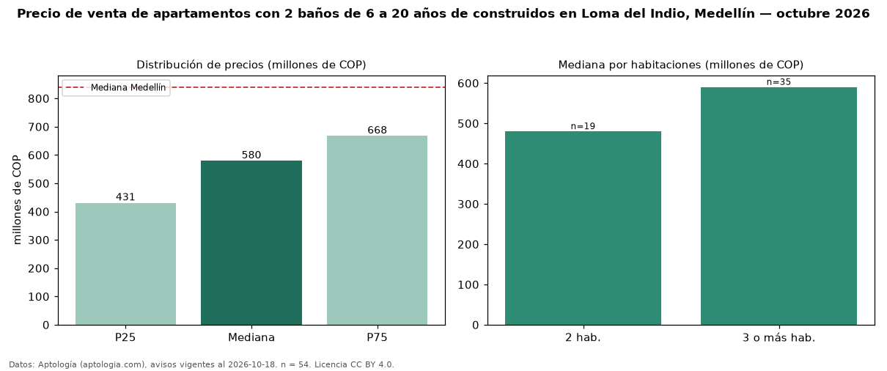

Precio de venta de apartamentos con 2 baños de 6 a 20 años de construidos en Loma del Indio, Medellín — octubre 2026
En Loma del Indio, Medellín, la mediana de precio de venta de apartamentos con 2 baños de 6 a 20 años de construidos es COP 580 millones, según 54 avisos vigentes. Prácticamente coincide con la mediana de los apartamentos con 2 baños en venta de Loma del Indio (COP 570 millones, n = 174); este segmento reúne el 31 % de esos avisos. Por metro cuadrado, la mediana es COP 7,83 millones/m² (n = 54), 3 % por debajo de los apartamentos con 2 baños en venta de Loma del Indio (COP 8,07 millones/m²). El área mediana anunciada es 70 m². El segmento con más oferta es el de 3 o más habitaciones (35 avisos, mediana COP 590 millones); pasar de 2 habitaciones a 3 o más habitaciones cambia la mediana +23 %. La administración mediana declarada es COP 407.500 al mes (n = 46). El estrato más frecuente es 4 (87 % de los avisos con estrato). La mediana de todos los apartamentos en venta de Medellín es COP 840 millones (−31 % de diferencia). Datos: Aptología (aptologia.com), CC BY 4.0 — https://www.aptologia.com/venta/medellin/loma-del-indio. Archivos: PDF, CSV con las cifras y gráfica PNG.

| Avisos únicos | 54 |
|---|---|
| Percentil 25 | COP 431.000.000 |
| Mediana | COP 579.500.000 |
| Percentil 75 | COP 667.500.000 |
| Mediana por m² | COP 7.828.828 |
Fuente: avisos vigentes de portales inmobiliarios recopilados por Aptología, deduplicados (mínimo 30 avisos únicos por celda). Precios pedidos, no cerrados. Fecha: 2026-10-18.